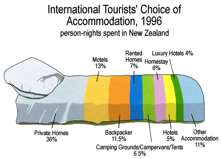
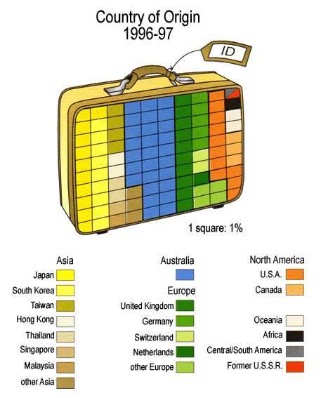

Tourist accommodation
The diagram below was published to describe where tourists in New Zealand stayed during their trips.

This is similar to a stacked bar chart, but the pillow on the bed gives undue visual impact to the first category.
Petrol
The two diagrams below were published in a major New Zealand newspaper in 1997 and are much more misleading.
 |
 |
The diagram on the left gives greater visual impact to the central categories, both of which are types of government taxation. It should come as no surprise that the diagram was provided to the newspaper by one of the petrol companies!
The diagram on the right is not so bad, but it has been inaccurately drawn and the perspective display makes the petrol companies at the top of the diagram seem too large. (The diameter of the barrel is greater at the top.)
Origin of tourists to New Zealand in 1996-97
In next diagram also uses splits a picture into segments, but at least some attempt has been made to keep the visual impact of each category proportional to its value.
